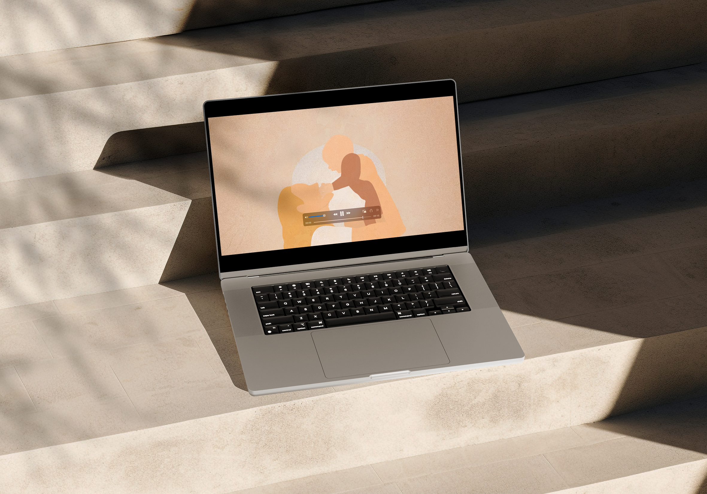
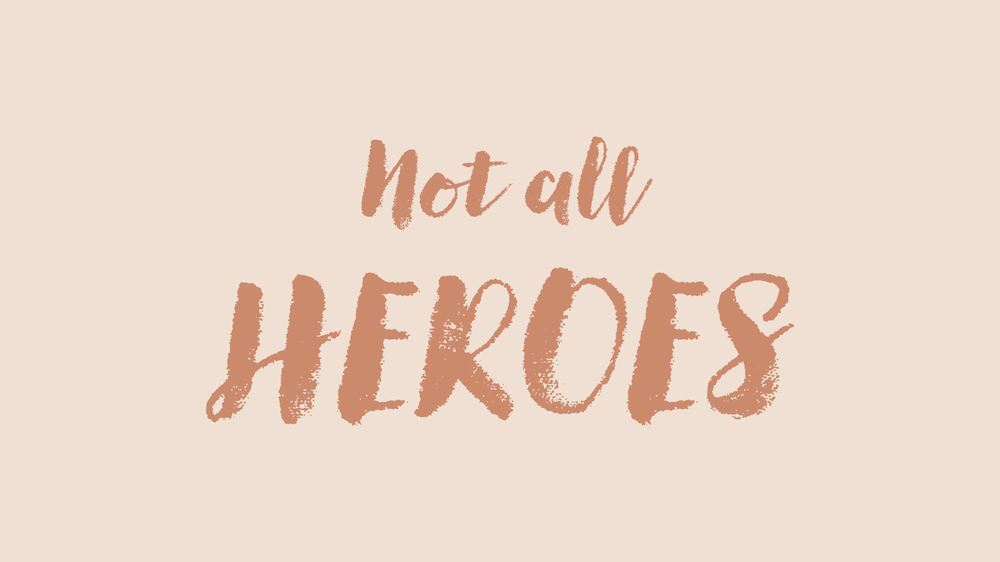
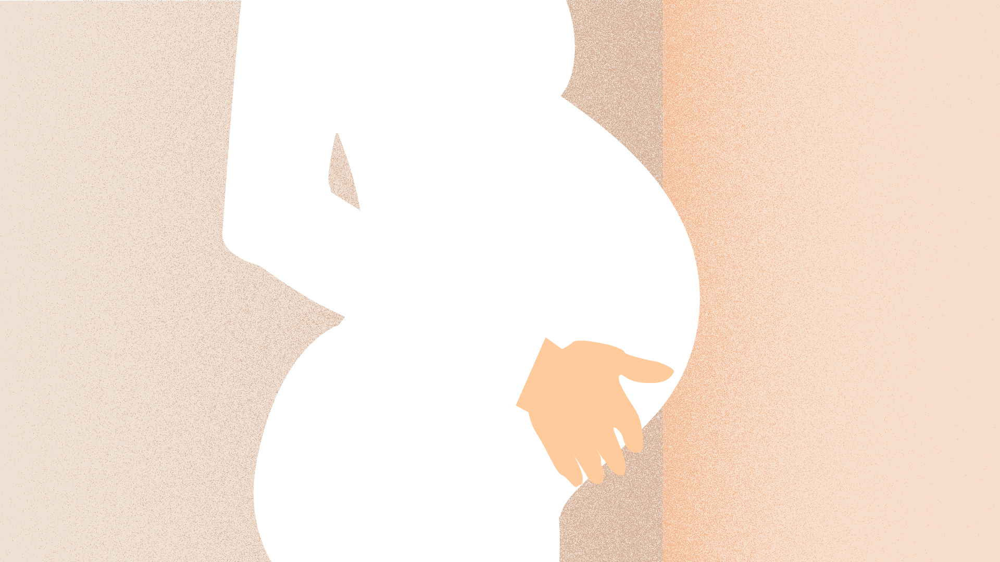
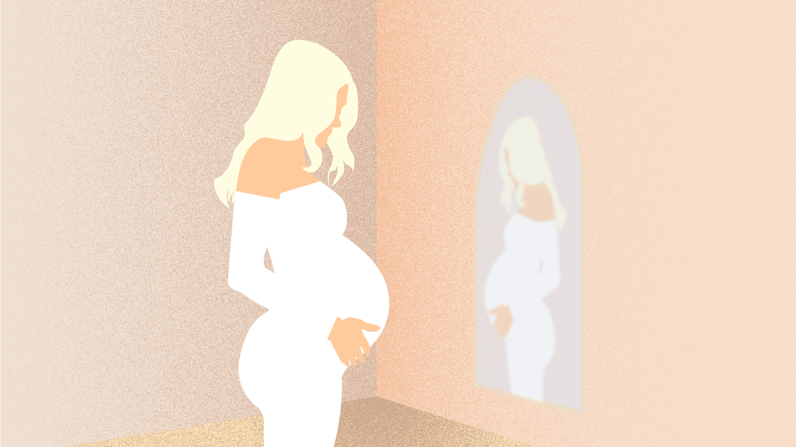
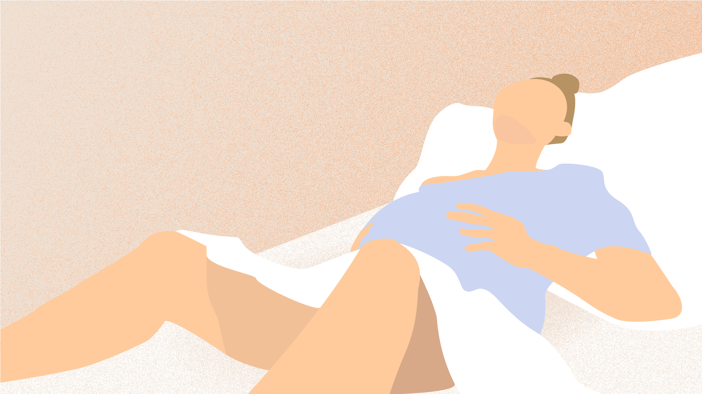
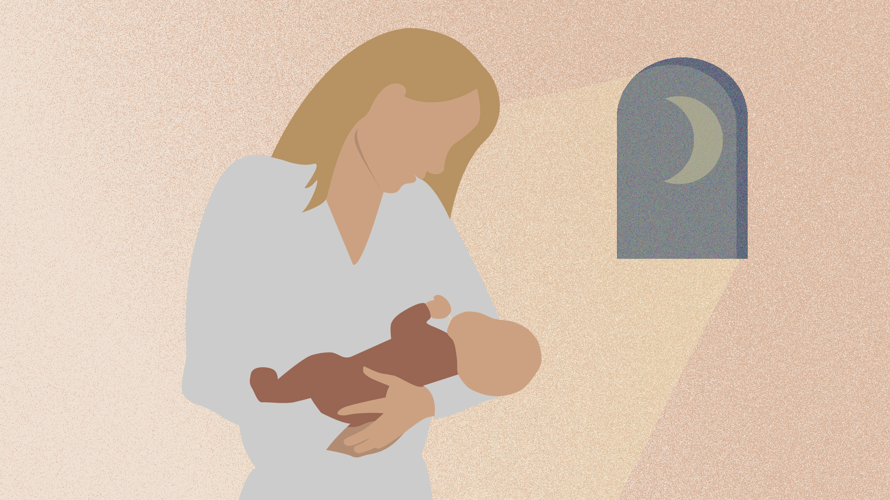
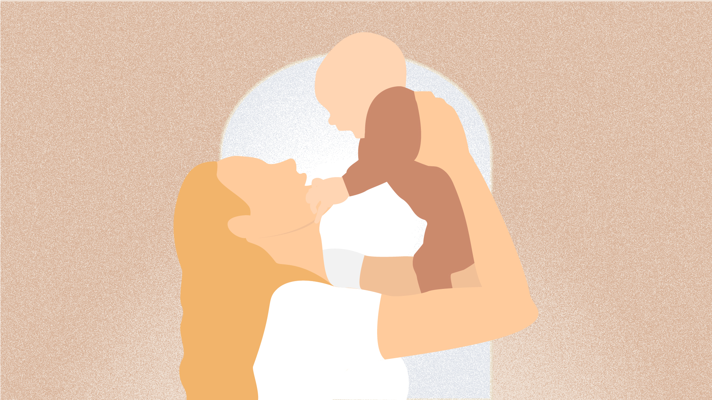
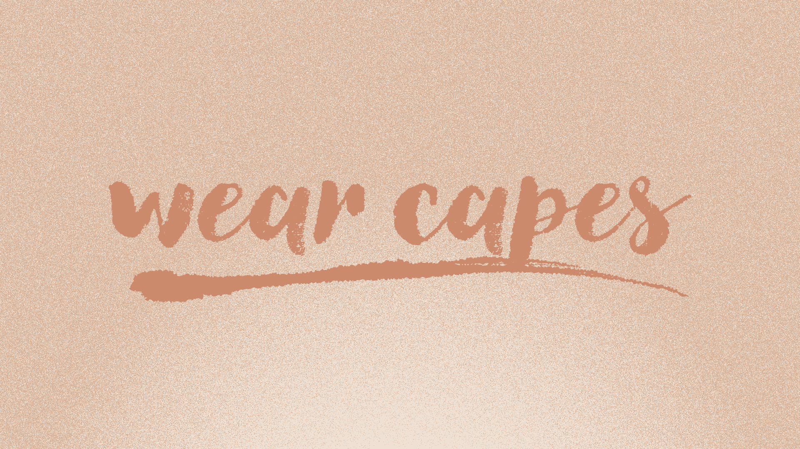

Motion Design
10 second animation
← ProjectsThis project explores the full motion design process — from concept and story development to illustration, animation, and final execution. The goal was to create a clear visual narrative within a strict 10-second format.








This animation explores motherhood through the concept of mothers as “heroes without capes.” It highlights the often unseen strength, care,
and resilience that define the role, and aims to recognise the inherent heroism in everyday motherhood.
The narrative focuses on pregnancy, birth, and early motherhood, capturing both the challenges and the moments of joy. By presenting these
experiences side by side, the animation reflects the complexity of motherhood, where hardship and beauty coexist. At its core, the message is
simple: you are doing fine—an effort to empower and reassure mothers, particularly those new to the role.
The visual style is rooted in conceptual illustration, with a soft, organic, and feminine aesthetic. Using abstract, free-flowing shapes, subtle
gradients, and textured overlays, the animation emphasises mood and metaphor over realism. A muted, earthy colour palette reinforces a calm and
grounded atmosphere, supporting the emotional tone of the story.